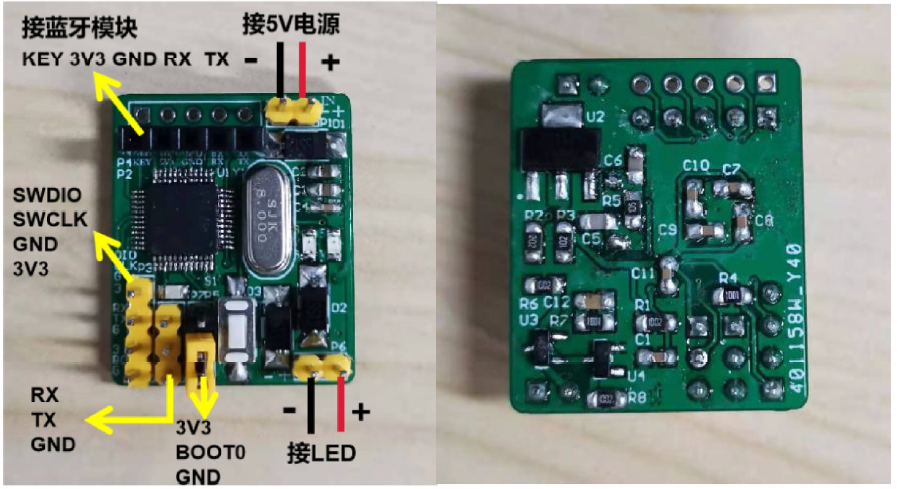

Biography
Kwan Wai-Pang obtained his Bachelor degree in Electronic Science & Technology, as well as Master degree in Control Theory and Control Engineering from the South China University of Technology.
He is currently pursuing his PhD degree in Robotics at the University of Hong Kong.
He has worked with several reputable organizations, including: Samsung Electronics, Huawei Technologies, The Chinese Academy of Sciences, The Chinese University of Hong Kong, The Hong Kong University of Science and Technology, etc.
He has also served as technical consultant for multiple companies, such as TCL.
Moreover, he has published over 60 research articles in prestigious international journals and conferences, as well as holds more than 50 authorized patents.
His research interests primarily focus on robotics, event-based VO/VIO/SLAM, visible light positioning, etc.
Email: guanwp@hku.hk
My Publications Link and Granted Patents Link
Research Works
SLAM
-
Representative works are demonstrated in:
Advanced Intelligent Systems,
IEEE-TASE,
IEEE-RAL,
IROS 2022,
IROS 2023,
ICRA 2024,
etc..
- More demonstrations in Event-based VO/VIO/SLAM can be seen in Github Link.
- EVI-SAM is a full event-based SLAM system that tackle the problem of 6-DoF pose tracking and 3D dense mapping using the monocular event camera.
To the best of our knowledge, this is the first framework that employs a non-learning approach to achieve event-based dense and textured 3D reconstruction without GPU acceleration.
Additionally, it is also the first hybrid approach that integrates both direct-based and feature-based methods within an event-based framework.
- Event-based VIO offers robust state estimation for a flying drone in aggressive motion and high-dynamic-range scenarios.
- A collaborative event-based dataset for autonomous driving in partnership with Hong Kong Polytechnic University (Website of the dataset).
We explore the inquiry: Are event cameras ready for autonomous driving?
Meanwhile, we also investigates the perceptual capabilities of various sensors, including LiDAR, standard cameras, infrared cameras, and GNSS-RTK/INS.
Visible Light Communication
-
Representative works are demonstrated in:
IEEE/OSA-JLT,
IEEE-TIM,
IEEE-SJ,
IEEE-PJ,
OFC 2021,
CLEO 2022,
etc..
- More demonstrations in VLC/OCC/VLP can be seen in Blog Link.
- Camera-based VLP for indoor positioning using mobile phone.
Simultaneous localization and calibration using double-LED and single camera for achieving tilted-VLP (left).
Single-LED VLP with PDR to circumvent the requirement of dense LED deployment (right).
-
Camera-based VLP for robot indoor localization.
In 2018, we developed the world's first robot positioning system using VLP (left).
Multi-robot VLP system integrated with the indoor layout map and occupancy grid map (right).
- Self-designed plug-and-play VLC chip module tailored for commercial LED.


- OCC for IoT Application: Barcode scanning using OCC-based optical stripe codes.
- Simultaneously providing centimeter-level high-precision positioning and constructing LED-Landmark maps, thus eliminating the need for manual pre-collection of LED locations.